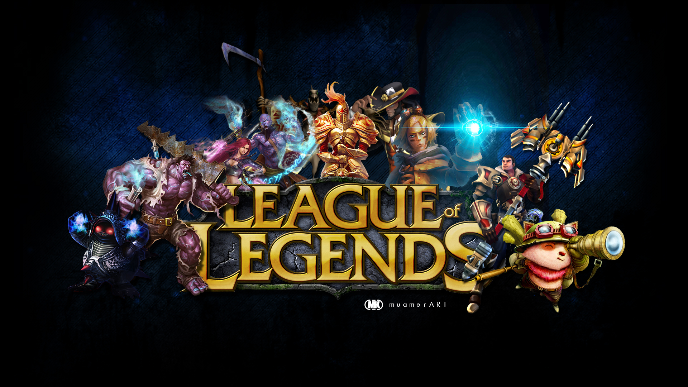

¡No faltará la diversión! Sony confirma 13 juegos más para PlayStation VR2. El PlayStation VR2 debutará el 22 de febrero y para emocionar a los fans Sony acaba de revelar 13 adiciones a la lista de juegos que saldrán a la venta en el primer mes de estreno del sistema, precisamente, desde febrero hasta el último día de marzo. En esta selección aparecen grandes títulos, como Rez Infinite y Tetris Effect, que aprovecharán las bondades del nuevo visor.

Activision retrasa la Temporada 2 de CoD: Modern Warfare II y Warzone 2.0 A través de twitter, Activision confirmó que la Temporada 2 dará inicio el próximo 15 de febrero en lugar del 1 de febrero como se tenía previsto originalmente. Esto quiere decir que los fanáticos de ambos juegos tendrán que esperar aproximadamente 2 semanas. La compañía se abstuvo de revelar detalles, pero confirmó que los equipos de desarrollo trabajan en cambios basados en la retroalimentación que escucharon de la comunidad de jugadores.
